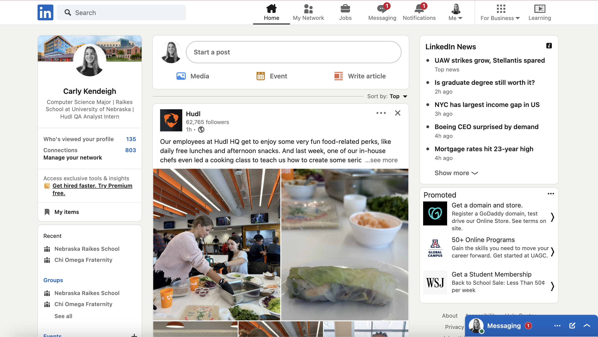

My Blogs
 Direct Analysis
Direct Analysis
I wanted to compare the findings from the design systems reading to a website I check daily: LinkedIn. The website demonstrates an effort by the design team to achieve a cohesive and efficient layout for their product. However, in my research I noticed some inconsistencies, prompting a targeted approach to design consistency and effectiveness. There are deconstructed large design elements into smaller, atomic components. For instance, they broke down more complex interface elements like user profiles, job postings, and connection requests into fundamental building blocks. These components (profile cards, job tiles, and connection buttons) were organized into a comprehensive style guide and component library. This ensured uniformity in typography, including typefaces (e.g., Arial, Helvetica), font sizes (e.g., 16px, 18px), font weights (e.g., regular, bold), and line-heights across the platform. (All found in LinkedIn’s brand design and style guide manual) The design system emphasized responsive layouts, showcasing how elements like profile pictures and text boxes adapt seamlessly to various screen sizes, from desktops to smartphones. This adaptability ensures a consistent user experience, regardless of the device being used, since the website has desktop and mobile versions. The inclusion of media queries and flexible grids illustrated this responsive design approach. LinkedIn’s evolving design system is exemplified by ongoing efforts to enhance accessibility. For instance, they integrated high color contrast for improved readability, making the platform more inclusive. Additionally, user feedback mechanisms were demonstrated, showcasing how LinkedIn incorporates user suggestions to improve the design system, validating its user-centric values. Incorporating the use of consistent spacing and alignment, the website demonstrated a meticulous attention to detail in spatial systems and grids. Elements such as margins, paddings, and grid layouts were strategically implemented, providing a visually organized and aesthetically pleasing design. Overall, LinkedIn's website layout exemplifies a carefully crafted design system that prioritizes consistency, accessibility, and user-centricity, embodying the brand's commitment to providing an optimal user experience.
